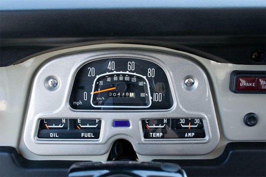

Directed/Produced/Shot by Eoghan Kidney
Directed/Produced/Shot by Eoghan Kidney
The video shows the 7 Canary Islands from the point of view of the time, with slow and fast motion , throughout an entire year. Completely shotted in High Definition and 35 mm DSLR cameras, using timelapse and overcranking modes.
“YouTube provides a steady stream of inspiration to advertising creatives, but it also leaves young directors vulnerable to having ideas stolen and agencies open to accusations of plagiarism. How can both directors and agencies protect themselves?”
The alter-ego, portfolio & playground of Niklas Lunderberg, a young self-taught graphics designer & illustrator working with print, motion & photography.
Art Director & Illustrator Loic Sattler refreshes his portfolio.
“The Munich flagship store was designed by Ignasi Llauradó and Eric Dufourd of dear design, a design and architectural firm the two established in Barcelona in 2005.
Dark-glass surfaces, mirrors, metal trees and cage-like boxes hanging from the ceiling (from which the shoes have “escaped”), all carry a carefree, experimental and impermanent air. The angular and clunky space with its hard edges and seemingly moving parts is clearly an attempt to say that the septuagenarian brand is nowhere near slowing down. - Tuija Seipell”
Jason Fried keynote @ Big Omaha 2009
If you review your first site version and don’t feel embarrassment, you spent too much time on it.
Reid Hoffman, as quoted in Mark Goldenson’s 10 lessons from a failed startup, a post-mortem of what PlayCafe’s founders did right and wrong.
Photographer Christopher Lamarca’s galleries cover Offshore Drilling, Forest Defenders, Drum and Dance, and many other relevant social issues.
The blog for the design firm Mr. Henry in Antwerp is rich with personality. Excellent example of a solid blog design with a great concept.
Ninety-nine percent of advertising doesn’t sell much of anything.
David Ogilvy

Gary Vaynerchuk at FOWA Miami 09 from DamianVoltes.com on Vimeo.
Right now is the time to invest in yourself and push ahead the others. In this new era only the hungry and passionate will succeed.
“Short-term rewards are meant to sustain, to keep the status quo. It is during the pursuit of extraordinary achievements that traditional short-term rewards fail.”
Read the full article at Behance Magazine
Experiments with ferrofluid and a Canon Rebel XT DSLR using time-lapse sequences.
Make Something Cool Every Day continued